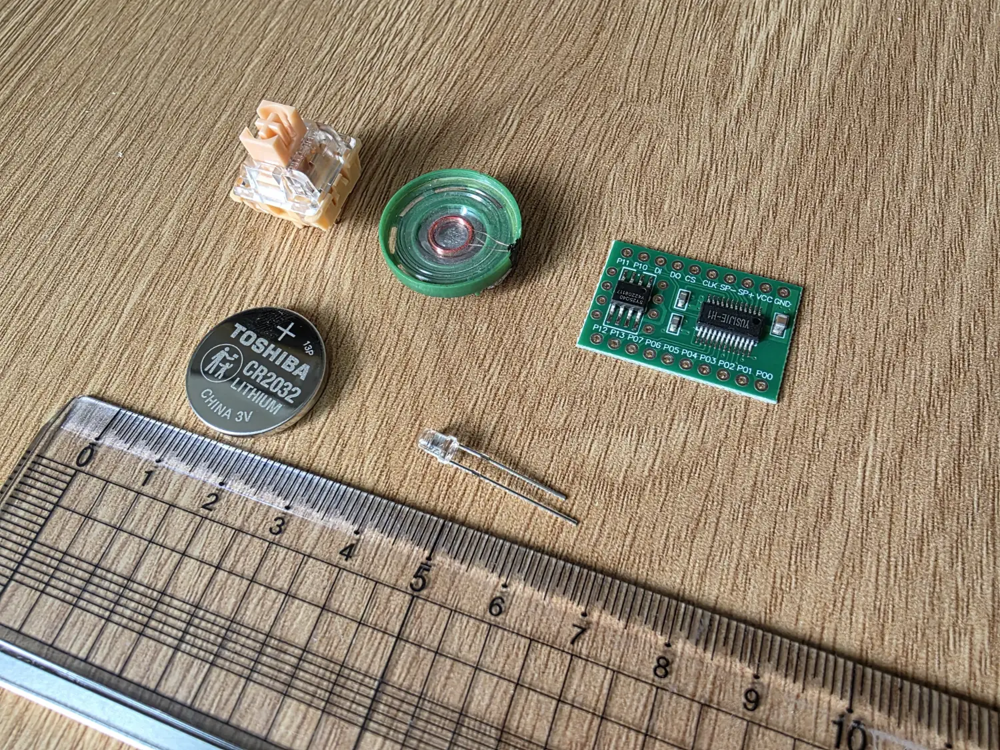
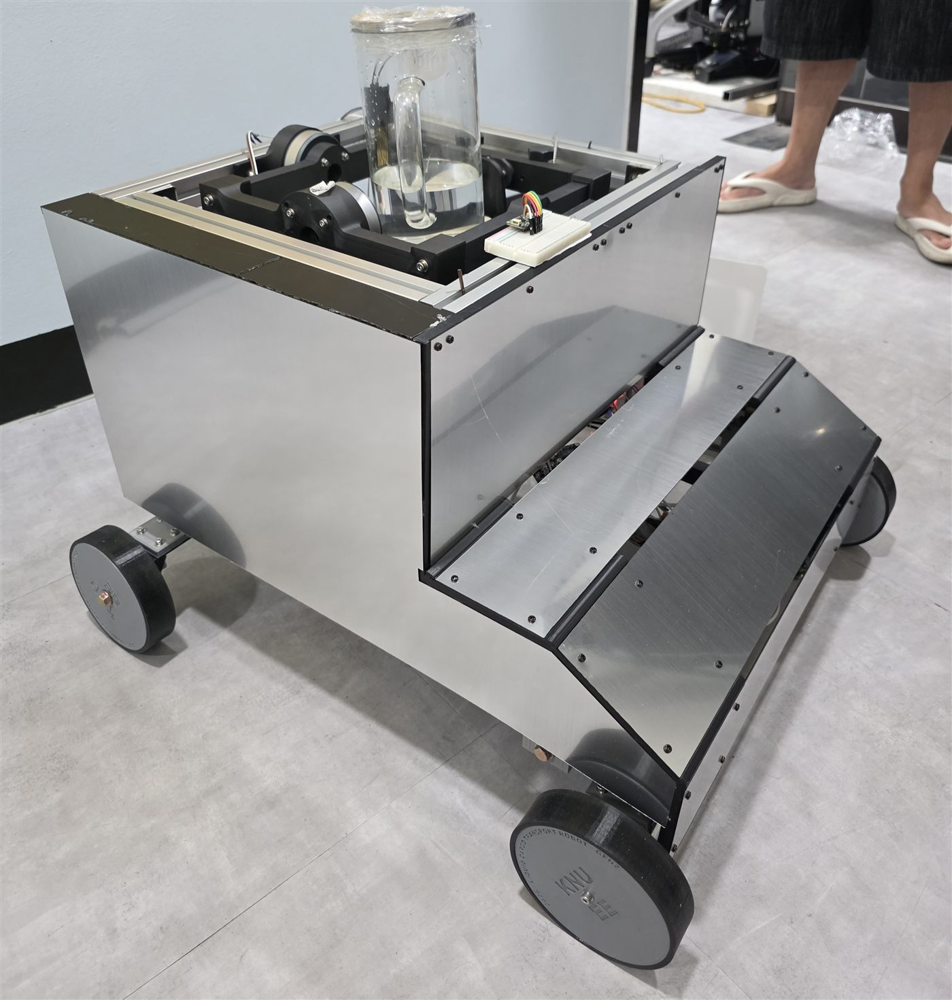
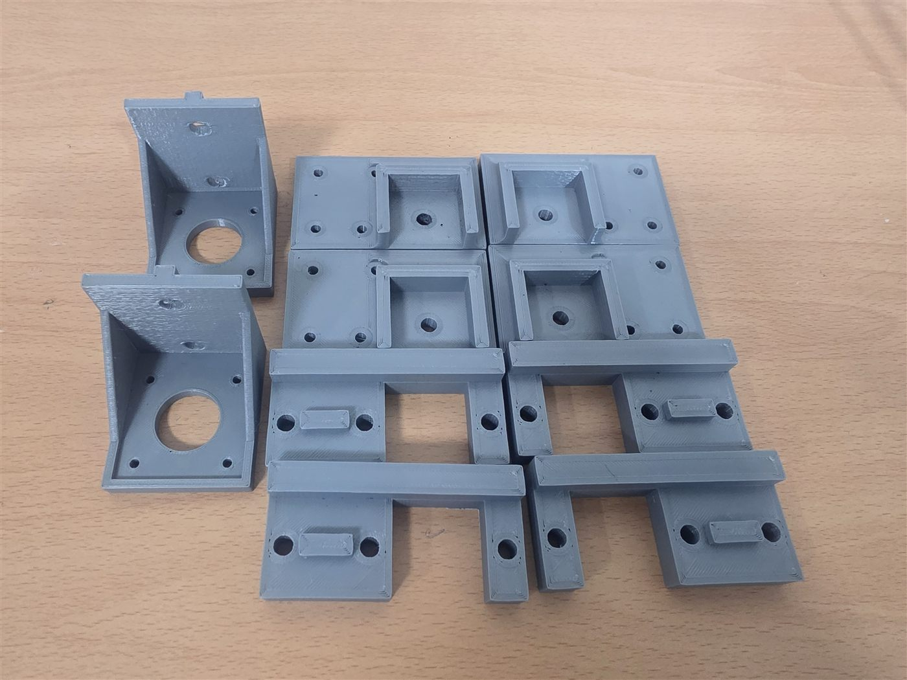
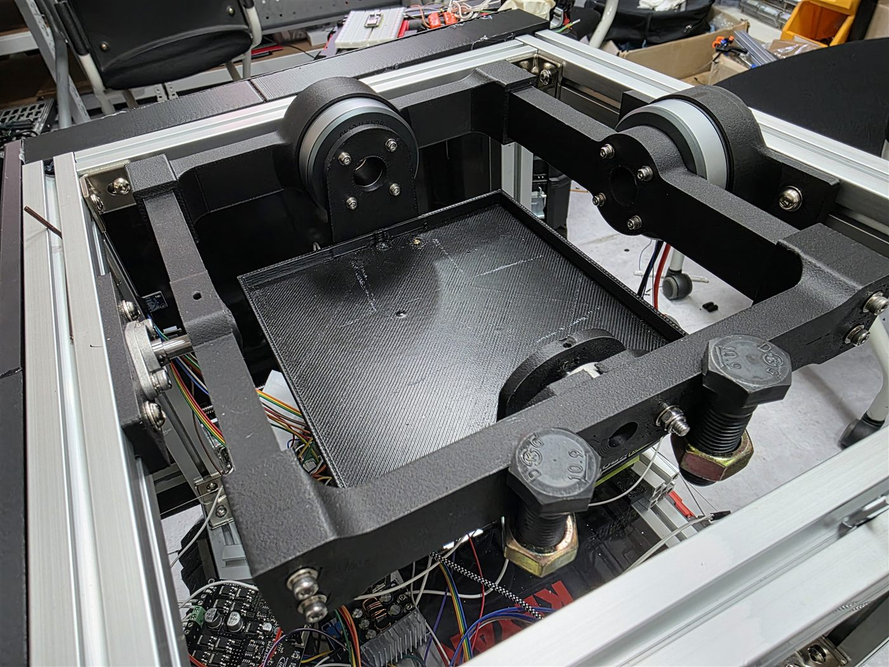
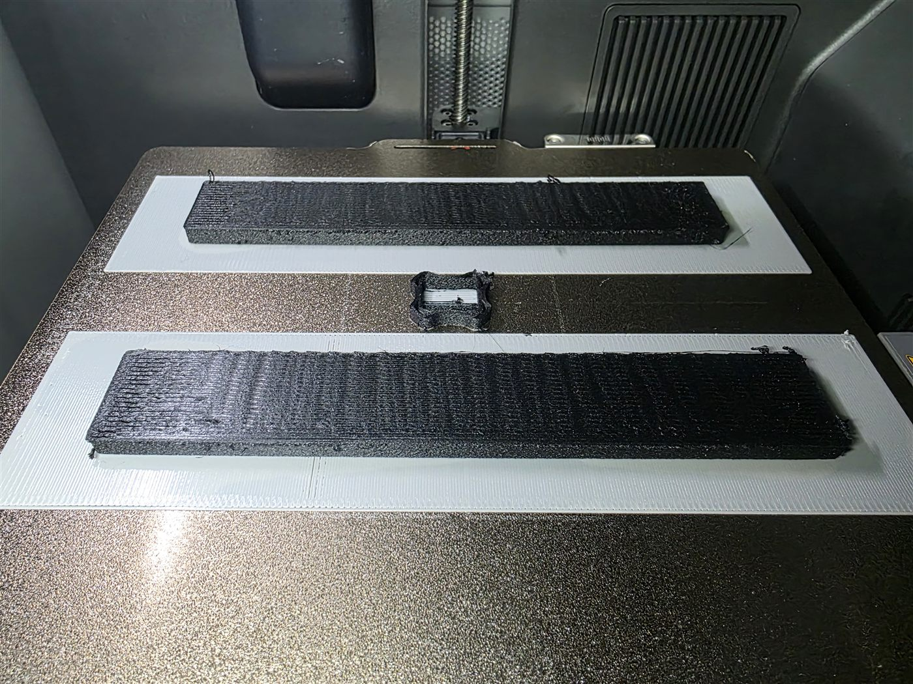
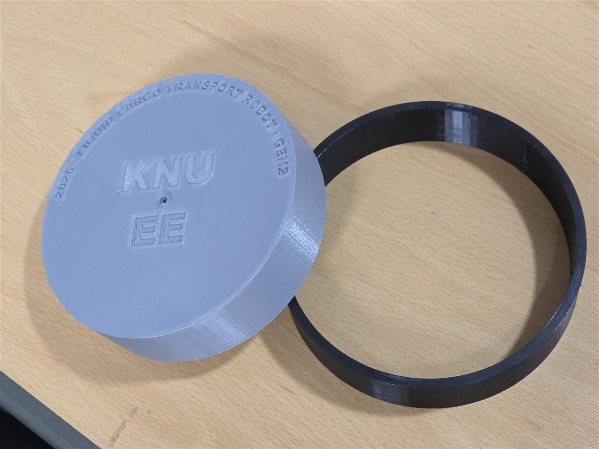
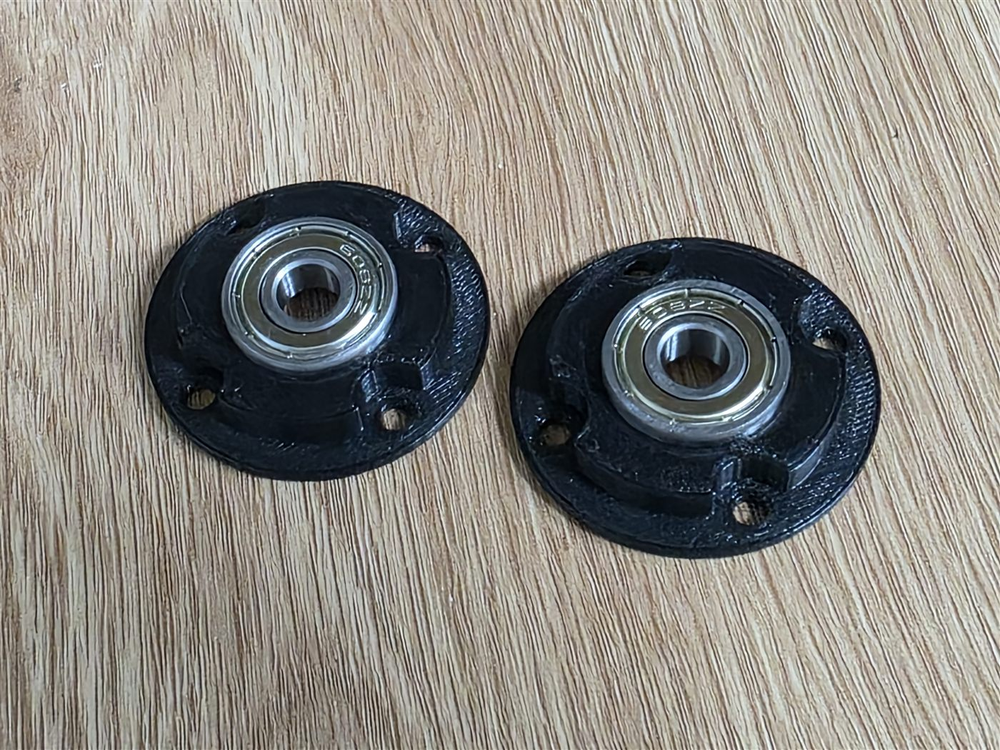

UB 신입 교육 · 3D 모델링
회로 제작과 3D 모델링을 함께 다루는, 프로젝트에 바로 쓸 수 있는 기초 체력을 기릅니다.
누르면 LED가 켜지고, 사운드 IC를 통해 동물 소리가 나는 키캡형 클리커입니다. CR2032 배터리, 사운드 IC, 스피커 등 필요한 재료는 미리 준비되어 있습니다.
클리커를 소재로 정한 이유는 회로와 하드웨어 구조 설계까지 모두 경험해볼 수 있는 시스템이기 때문입니다.
이런 느낌으로 만들어볼 예정입니다 → 참고 영상 보기
단순히 완성품을 만드는 게 목적이 아닙니다. 나중에 실제 프로젝트를 진행할 때 필요한 실전 역량, 즉 회로 제작과 3D 모델링·프린팅을 함께 다루는 능력을 기르는 것이 이번 활동의 진짜 목표입니다.
전체적인 방향과 3D 프린터 사용법은 간단하게 안내해드리고, 모델링 학습에 도움이 될 참고 영상도 추천해드립니다. 다만 세세한 진행은 각자 스스로 해보시는 걸 목표로 합니다. 앞으로 각자의 프로젝트에서 바로 써먹을 수 있어야 하니까요.
다 같이 모여서 진행하기는 어려운 활동입니다. 각자 모델링을 공부해보시고, 출력이 필요하거나 막히는 부분이 있을 때 수시로 연구실에 오셔서 진행하시면 됩니다. 저는 거의 대부분 학교에 있을 예정이라 궁금하거나 필요한 게 있으면 조금씩 도와드리겠습니다.
정해진 틀은 없습니다. 내부 회로 없이 외형만 만드셔도 되고, 클리커가 아니더라도 다른 걸 만들면서 3D 프린터를 써보고 싶으신 분도 자유롭게 신청하셔도 됩니다.

| 부품 | 사양 | 수량 |
|---|---|---|
| 기계식 키보드 스위치 | — | 1 |
| CR2032 배터리 | — | 1 |
| RGB LED | 2핀, 시간에 따라 색이 변하는 타입 | 1 |
| 스피커 | 8Ω, 0.25W, 지름 21mm, 두께 7mm | 1 |
| 사운드 IC | — | 1 |
| 저항 | 22Ω (소리 크기 조절용) | 1 |
| 전해 커패시터 | 470µF (돌입전류 방지용) | 1 |
스피커와 사운드 IC는 아래 링크에서 구매했습니다. 참고하실 분은 확인해 보세요.
22Ω 저항은 스피커와 직렬로 연결합니다. CR2032는 순간적으로 큰 전류를 감당하기 어려워서, 저항으로 전류를 제한해 배터리 부담을 줄여줍니다.
470µF 커패시터는 CR2032 양단에 병렬로 답니다. 돌입전류를 막아줍니다.
어떤 소리가 나게 할지는 핀 두 개를 연결해서 정합니다. 예를 들어 호랑이 소리는 P11과 P6, 새소리는 P10과 P3을 연결하면 됩니다.
표에서 고른 두 핀을 키보드 스위치의 양 단자에 연결하면 됩니다. 스위치를 눌러 두 핀이 붙는 순간 해당 소리가 재생됩니다.
| 조합 | 소리 |
|---|---|
| P10 + P2 | 뻐꾸기 |
| P10 + P3 | 새 지저귐 |
| P10 + P4 | 늑대개 짖는 소리 |
| P10 + P5 | 울부짖음 |
| P10 + P6 | 수탉 |
| P10 + P7 | 소 |
| P11 + P2 | 소 |
| P11 + P3 | 돼지 |
| P11 + P4 | 엉엉 우는 소리 |
| P11 + P5 | 고양이 |
| P11 + P6 | 호랑이 |
참고
P12, P13은 총기·폭발음입니다. 필요하시면 IC 데이터시트를 참고하세요.
데이터시트상 LED는 P01에 연결하게 되어 있는데, 여기에 달면 6Hz로 계속 깜빡이기만 하고 색이 변하지 않습니다. 색도 변하면서 제대로 동작하는 위치를 찾는 중이라, 확정되면 이 페이지에 업데이트하겠습니다.
프로젝트를 진행하다 보면 3D 모델링과 프린터가 필요한 순간이 정말 많습니다. 이걸 스스로 할 수 있느냐 없느냐가 프로젝트 속도와 완성도를 크게 좌우합니다.
아래는 이 페이지를 만든 운영진이 진행한 프로젝트의 사례입니다. 동아리에서 만든 것은 아니지만, 하드웨어는 전부 혼자 제작한 프로젝트라 3D 프린팅이 실제 프로젝트에서 어떻게 쓰이는지 보여드리기 좋을 것 같아 예시로 가져왔습니다.


모터, 센서, 각종 모듈을 고정하는 브라켓은 거의 다 PLA로 만들었습니다. 시판 브라켓은 규격이 안 맞아서 설계를 거기에 맞춰야 하는데, 직접 만들면 필요한 치수로 바로 뽑을 수 있습니다. 한 번에 완성되지 않아 여러 차례 다시 출력하며 치수를 맞춰갔습니다.

회전 기구의 구조 부재를 탄소섬유 강화 PET로 출력했습니다. 하중을 받으면서도 변형이 적어야 하는 부분이라 일반 PLA로는 감당이 안 됩니다.

유리섬유 강화 나일론으로 판스프링을 출력했습니다. 이 재료는 수축이 심해서 출력 중에 바닥에서 들뜨는 문제가 생깁니다. 이를 해결하려고 얇은 PETG 층을 먼저 깔고 그 위에 출력하는 방법까지 동원했습니다. 재료 하나 쓰는 데도 이런 시행착오가 필요합니다.

시판 바퀴가 조건에 안 맞아서 직접 만들었습니다. PLA로 허브를 출력하고, 그 위에 경도 90A TPU 링을 씌우는 구조입니다. TPU 링 내경을 허브보다 0.4mm 작게 설계해서 접착제 없이 끼워 맞췄고, 공차를 확정하려고 크기가 다른 시험용 링을 여러 개 만들어 비교했습니다.

시험 도중 뒷바퀴 모터에 문제가 생겼는데, 원인을 찾고 부품을 교체할 시간이 없었습니다. 모터를 빼면 바퀴를 지지할 방법이 사라지는 상황이었는데, 베어링을 고정하는 부품을 바로 설계해서 출력하고 끼워 넣어 바퀴가 굴러가게 만들었습니다. 이런 게 3D 프린터를 쓸 줄 알 때의 진짜 장점입니다. 부품 주문하고 배송 기다렸으면 일정이 통째로 밀렸을 겁니다.
참고
현재 동아리 프린터로는 위 사례 중 일부 엔지니어링 필라멘트(PET-CF, PA6-GF 등)를 출력할 수 없습니다. 이런 재료는 높은 온도와 챔버 환경이 필요합니다. 현재 엔지니어링 필라멘트도 출력 가능한 프린터를 구하는 중입니다.